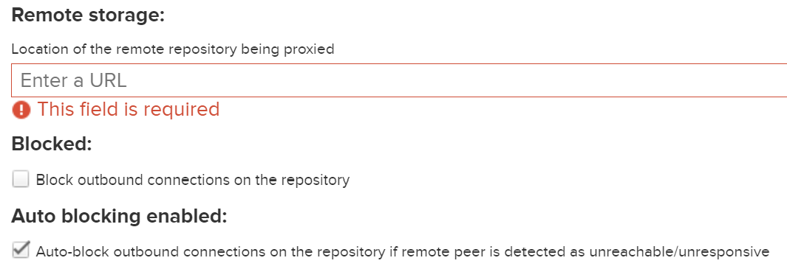
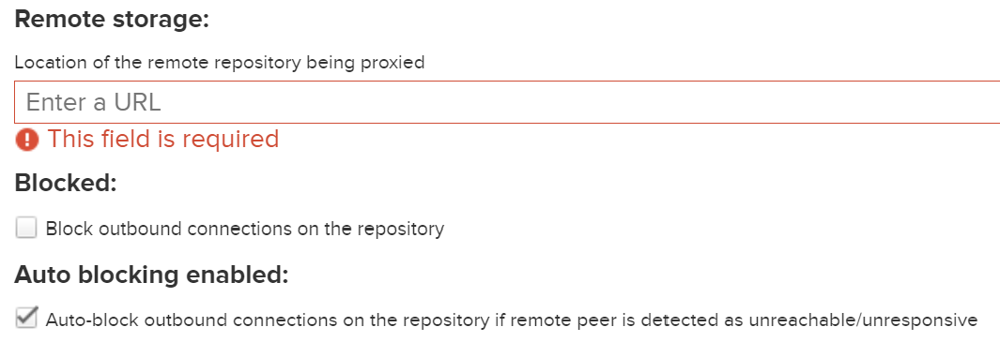

网络服务软件
Apache2
安装
sudo apt install apache2
安装完成后，服务器在后台运行，即可通过IP地址访问服务器。
服务器以管理员身份运行。
服务器运行管理
sudo service apache2 start
sudo /etc/init.d/apache2
apache2ctl start|stop|restart|....
创建网站
默认站点
内容位于/var/www/html（可通过配置文件/etc/apache2/sites-enabled/000-default.conf修改站点的根目录等信息）。
创建站点
Apache通过编辑虚拟主机（Virtual Host）文件来管理多个站点。可以通过复制默认站点文件来创建新的站点的配置文件。
cd /etc/apache2/sites-available
sudo cp 000-default.conf server.conf
000-default.conf对应的是HTTP服务的默认站点，default-ssl.conf对应的是HTTPS服务的默认站点。
虚拟站点
然后编辑站点的配置文件*，其中
[Listen [ip_addr:][port]]
<VirtualHost [ip_addr][:port]>
ServerAdmin yourname@example.com # 管理员邮箱
DocumentRoot /var/www/server/ # 站点根目录
ServerName www.server.net # 站点域名（默认文件中没有此项）
</VirtualHost>
IP地址可以为通配符（
*）；一个配置文件可包含多个
VirtualHost，默认站点不需要添加域名，其他站点需要设置唯一的ServerName。也可以将不同的VirtualHost放到单独的配置文件中。
在/var/www/（或其他目录）下创建站点对应的文件夹。
sudo mkdir /var/www/server
完成上述配置后，需要运行以下命令以启用站点。
sudo a2ensite server.conf # enable an apache2 site(virtual host)
使用
a2dissite停用站点。
完成后重启Apache，
service apache2 reload # or
systemctl reload apache2
启用安全服务(HTTPS)
启用ssl模块和安全站点的配置文件。
sudo a2enmod ssl
systemctl restart apache2 # 重启Apache服务器
服务器管理
配置文件
配置文件位于：/etc/apache2/。
/etc/apache2/
|-- apache2.conf
|---- ports.conf
|-- mods-enabled
|---- *.load
|---- *.conf
|-- conf-enabled
|---- *.conf
|-- sites-enabled
|---- *.conf
apache2.conf是主要配置文件。
ports.conf
httpd
默认欢迎页面配置：/etc/httpd/conf.d/welcome.conf，移除该文件以禁用默认配置。
支持在服务目录下访问符号链接的权限：
-
服务目录配置支持跟踪符号链接；
<Directory "/var/www/html"> Options Indexes FollowSymLinks AllowOverride None Require all granted </Directory> -
http服务的运行用户（
apache）具有访问（execute）目标目录（及其父目录）的权限；httpdSymbolic link not allowed or link target not accessible -
可能需要关闭SELinux，以允许http服务访问服务目录外的位置。
You don't have permission to access
/directoryon this server
Nginx

CentOS安装：Nginx位于EPEL软件源中；Ubuntu软件源中已包含Nginx。
Nginx服务通常通过systemd管理（start|stop|restart|reload）。
服务器配置
配置文件
/etc/nginx/
-- /etc/nginx/nginx.conf # top-level configuration file
-- /etc/nginx/conf.d/ # HTTP server sites
-- /etc/nginx/conf.d/default.conf # configuration template
-- /etc/nginx/sites-available # apache-style config dir
-- /etc/nginx/sites-enable
nginx.conf是Nginx的主要配置文件，其中可以使用include指令将其他服务配置文件加入。如果某个配置项有错误，该配置项以及之后的配置项都不会被加载。在运行Nginx之前可先测试配置是否存在问题：
nginx -t -c /PATH/nginx.conf # 使用绝对路径，否则nginx会从默认配置目录读取
配置语法
设置变量：set $variable value;，值如果包含空格等特殊字符，需要使用""。
基本配置
access_log /var/nginx/logs/access.log;
error_log /var/nginx/logs/error.log; # 错误日志
error_log /var/nginx/logs/info.log info; # 将指定级别日志输出到指定文件
pid /var/nginx/logs/nginx.pid; # Nginx主进程ID
日志格式
log_format main '$remote_addr - $remote_user [$time_local] $server_name ...'
日志中NGINX提供的内置变量，以记录请求服务信息。
$server_name/server_addr/server_port：接受该请求的服务器名称（域名/IP地址）、地址、端口；$request_uri/$uri|$document_uri：原始请求URI（包含参数）、规范化URI；$query_string|$args：请求URI的查询参数；$scheme/$server_protocol/$request_method：请求使用http/https、HTTP协议版本、HTTP方法；$https：是否开启HTTPS、$request_length/$request：请求数据长度（包括请求行、头部以及请求体）、请求行；$remote_addr/$remote_port/$remote_user/：客户端地址、端口和用户名（基本认证机制）；$content_type/$cookie_name：请求头部信息；$time_local：服务器当前时间；status：响应状态；
HTTP静态站点
通过server块定义虚拟HTTP服务站点。其中listen和server用于定义虚拟服务的映射条件1：
listen：映射目标IP和端口，多个虚拟服务可共用相同的地址和端口，通过域名进行区分；如果省略IP地址，则监听服务器的所有地址；如果省略端口，则默认监听端口为80或8000。server_name：客户端请求域名，多个域名以空格分隔，支持通配符以及正则表达式匹配2。如果未匹配到任何域名，则将请求转发至listen字段包括default_server的服务站点。
http {
server {
listen 80 default_server; # 监听[ip_addr:]port
server_name www.example.com example.com;
root /var/www; # 默认根目录(仅能访问根目录下的内容)
location / { # 根目录配置
index index.html index.htm; # 默认主页，设置在根目录的配置下
root /usr/share/nginx/html; # 根目录对应的物理目录[路径重定向]
}
}
server { # 使用相同地址服务不同域名的HTTP服务
listen 80;
server_name test.example.com;
root /var/test;
}
}
default_server：未匹配到域名时的默认服务。
Nginx默认的服务进程用户为nobody/nginx，因此服务目录下文件应该对所有用户有读权限，所有目录对所有用户有访问权限，否则会产生403 Forbidden错误。
文件服务器
http {
server {
autoindex on; # 显示目录
autoindex_exact_size on; # 显示文件大小
autoindex_localtime on; # 显示文件时间
# ...
root /share/fs;
}
}
反向代理转发
location ^~ /test/ {
proxy_pass http://host_addr:8080;
}
location ^~ /test/1 {
proxy_pass http://127.0.0.1:8080;
}
location = /test/prefix/ {
proxy_pass http://127.0.0.1:8080;
}
location ~ ^/debug(.*)/log(.*)/ {
proxy_pass http://host_addr:8080/debug_log/$1/$2/; #*
}
location / {
proxy_pass http://127.0.0.1:8080;
}
*：如果匹配规则为正则表达式，转发地址中可包含正则表达式的捕获参数。
URL位置匹配规则（匹配优先级从高到低）3：
-
前缀匹配：以
=、^~修饰或无修饰符的匹配规则，按书写顺序检查。location = URI：精确匹配，匹配后立即响应请求。通常写在规则列表前面，用于匹配最常访问的URL如location = /。location ^~ URI：优先最长匹配，如果请求路径包含指定前缀，在匹配所有前缀匹配规则后，返回带^~的最长匹配；通常用于匹配服务器上的资源目录。location URI：最长匹配，记录下最长匹配记录，==但不做处理==（==优先级最低==，但搜索先于正则匹配；可能是为了一同调用前缀匹配模块）。
以
/test/1合上述规则为例，匹配顺序为：priority prefix match for location: /test/ priority prefix match for location: /test/1 # Final Match prefix match for location: / -
正则表达式匹配：
location ~ URI（~*大小写敏感）按顺序查找，匹配到后立即响应请求；通常用于根据规则匹配URL，并在后续对URL进行修改。 -
最长前缀匹配：使用前缀匹配过程中记录到的最长匹配响应请求；通常会设置
location /作为默认规则，因此，请求最后总能被一条规则所处。Nginx location block section：https://stackoverflow.com/a/59846239/6571140
编写匹配规则时，应该将较为精确的匹配项放在靠前的位置，否则更加模糊匹配项会覆盖精确匹配项，导致与期望的转发行为不一致。当出现转发失败或未按期望转发时，可对比Nginx的日志文件access.log和error.log（其中包含了用户的请求URL与Nginx的响应URL），排查错误原因。
资源路径重定向
rewrite将指定路径并替换为新的路径，root重新指定资源的根目录。
location [modifier] [URI] {
rewrite /path/($REGEX)/subpath/ replace_path break;
root base_path; # 实际访问 base_path/replace_path
}
$REGEX表达式可使用正则表达式，replace_path和base_path可使用rewrite表达式的捕获组（$1,$2,...）。
HTTPS配置
Docker Containers - Rocket.Chat Docs
server {
ssl_certificate /etc/nginx/certificate.crt;
ssl_certificate_key /etc/nginx/certificate.key;
ssl_dhparam /etc/nginx/dhparams.pem;
}
"ngx_master_****" was not signaled for 5s：在Windows下，由于SSL密钥需要输入密码导致Nginx服务启动超时。可将证书密码保存在文本文件中（放在安全位置），并在Nginx配置文件中添加ssl_password_file pass.txt或者将密钥的密码验证移除：
openssl rsa -in server.key -out serverunsecure.key
负载均衡
http {
upstream load_balance_server {
least_conn; # 负载均衡策略(默认为轮询)
server 192.168.1.11:80 weight=5; #*
server 192.168.1.12:80 weight=1;
server 192.168.1.13:80 weight=6;
}
server {
location / {
proxy_pass http://load_balance_server;
}
}
}
负载均衡策略：
- （加权）轮询：
weigth参数表示权值，权值越高被分配到的几率越大。； - （加权）最少连接：
least_conn； - IP映射：
ip_hash； - URL映射：
hash $request_uri；
Nginx常见错误
-
unknown directive "ssl" nginx：Nginx未安装SSL模块。 -
403 Forbidden (nginx: Permission denied)：1）文件及其上级目录权限配置不正确，Nginx工作进程所属用户无访问权限；SELinux开启阻止Nginx访问文件（特殊情况下，仅某个特殊文件无法被访问）。Modifying SELinux Settings for Full NGINX and NGINX Plus Functionality
-
502 Bad Gateway (nginx: (13: Permission denied) while connecting to upstream)：系统开启SELinux，默认不允许HTTP服务软件连接系统的其他服务（进行代理转发）。可选择：1）关闭SELinux；2）修改SELinux策略；setsebool -P httpd_can_network_connect on # [on/1] -P for persistent -
CORS(cross-origin resource sharing，跨源资源共享)错误：客户端请求缺少CORS标准相关的HTTP头部字段，浏览器不允许上述跨域访问行为。在不修改客户端（HTML或JS代码等）的情况下，可通过NGINX代理修改HTTP请求头部实现跨域资源共享。
add_header 'Access-Control-Allow-Origin' '*'; #* add_header 'Access-Control-Allow-Methods' 'GET, POST, OPTIONS'; #** add_header 'Access-Control-Allow-Headers' '*'; #*** add_header 'Access-Control-Allow-Credentials' 'true'; #**** if ($request_method = 'OPTIONS') { return 204; }*：该头部选项允许通配符以允许匹配的请求源站点。**：允许跨域访问的HTTP方法，支持通配符。***：如果出现Request header field xxx is not allowed by Access-Control-Allow-Headers in preflight response.，添加该头部，支持通配符。****：如果响应内容未携带该头部，浏览器将不会把响应内容返回给请求发送者。在响应附带身份凭证的请求时，不能将上述头部的值设置为通配符。 -
修改配置重新加载不生效（例如日志配置无效不输出日志）：
可能原因：Nginx后台进程未正常关闭（Windows），导致新启动的Nginx实例无法正常初始化。
解决方法：手动结束所有Nginx进程后，重新启动Nginx。
Caddy
Fast and extensible multi-platform HTTP/3 web server with automatic HTTPS.
安装
choco install caddy
运行Caddy服务
$env:XDG_DATA_HOME='path/'
caddy run --config caddy.json/Caddyfile --watch #*
caddy start|stop|reload # 后台服务管理
caddy.json或Caddyfile是配置文件，如果未提供配置文件，则服务器只有管理接口可访问。
*：--watch将监视配置文件更改并自动重新加载。
管理接口
http://localhost:2019/config/
Caddy模块
Caddy预装了标准模块，如匹配器、处理器、反向代理、TLS和日志等。
.\caddy.exe list-modules
配置Caddy
可使用JSON或Caddyfile对Caddy服务进行配置。JSON格式信息完整，对计算机解析更加友好；Caddyfile相对更加简洁，适合人工配置。
JSON配置
{
"apps": {
"http": {
"servers": {
"<server-name>": {
"listen": [
"[host]:port"
],
"routes": [
{
"match": [
{"host": ["domain.name"]}
],
"handle": [
{
"handler": "file_server",
"root": "/path/to/html"
}
]
}
]
}
}
}
},
"admin": {/*...*/},
"logging": {/*...*/},
"storage": {/*...*/}
}
JSON Config Structure - Caddy Documentation (caddyserver.com)
routes
定义了请求的匹配规则及其处理路径。match用于定义匹配规则，handle定义请求的处理方法。
handler
static_response：直接通过配置文件设置响应内容（body）；file_server：响应服务器上的静态文件资源（root）。reverse_proxy：反向代理。
Caddyfile配置
Caddyfile包含全局选项（可选）、配置片段（可选）、一个或多个站点配置块以及注释（#开头后续内容）。如果配置文件只包含一个站点，其配置块的{}可省略。

匹配器必须在站点内部定义，不存在跨站点的全局匹配器。
站点地址格式：
localhost、localhost:8080、127.0.0.1：监听指定IP地址/主机名和端口的请求；example.com、http://example.com：监听指定端口上的域名请求；:443、[::1]:2015、http://：监听所有地址的指定端口；*.example.com：监听所有匹配域名的请求。
在Caddyfile中可引用Shell环境变量，{$SITE_ADDRESS}。
静态资源服务
文件服务
example.com { # 站点域名(IP地址端口)
root * /home/me/mysite
try_files {path} /index.html # 如果指定URL不存在, 则回落到index.html
templates # 支持模板
encode zstd gzip # 开启内容压缩
file_server browse #*
}
*：browse选项为没有index.html的目录提供自动文件索引，否则访问对应目录的URL将返回404。
提供文件服务的快捷方式：
caddy file-server --listen :2015 --browse --root ~/mysite --domain my.domain
静态响应
localhost {
respond "hello world!"
}
反向代理
example.com {
reverse_proxy "/api/*" localhost:5000
# handle /api/* {
# reverse_proxy backend:8000
# }
}
反向代理可与静态站点结合使用：反向代理仅转发API请求，通过/api/*过滤后的静态文件则直接通过文件服务器响应。==具有匹配规则的处理方法将被优先检查==。
反向代理服务快捷方式：
caddy reverse-proxy --from :2080 --to :9000
省略
--form，则默认监听localhost:443的请求（或在.localhost中定义的域名）。--to默认转发至协议为http，如果后端使用https，则在转发地址中显式指定https://。
HTTPS
By default, Caddy serves all sites over HTTPS.
local_certs：（全局选项）所有证书采用通过本地签发，不通过公开的证书签发机构（用于开发环境）。
本地HTTPS
To serve non-public sites over HTTPS, Caddy generates its own certificate authority (CA) and uses it to sign certificates. The trust chain consists of a root and intermediate certificate. Leaf certificates are signed by the intermediate. They are stored in Caddy's data directory at
pki/authorities/local.
Pelican
Pelican is a static site generator
- Write your content directly with your editor of choice in reStructuredText or Markdown formats
- Includes a simple CLI tool to (re)generate your site
http://docs.getpelican.com/en/3.6.3/index.html
http://docs.getpelican.com/en/3.6.3/publish.html#deployment
Gunicorn
Gunicorn, 'Green Unicorn' is a Python WSGI HTTP Server for UNIX.
It is best to use Gunicorn behind an HTTP proxy server. We strongly advise you to use nginx.
Squid代理服务
web proxy cache server：提供HTTP、FTP等协议的代理和缓存服务，支持全面、细粒度的访问控制机制。
安装：
sudo apt install squid
sudo systemctl start/stop/reload squid #* 非root用户需要使用sudo, 否则可能导致缓存目录创建失败
配置
/etc/squid/squid.conf
服务端口
http_port 3128
服务地址：http://proxy-server:http_port。
磁盘缓存
默认缓存在内存中（重启服务丢失），可指定多行以使用不同的磁盘分区。
cache_dir ufs/aufs/diskd Directory-Name Mbytes L1 L2 [options]
cache_dir rock Directory-Name Mbytes [options]
-
缓存数据格式，包括
ufs（默认包含）、aufs、diskd、rock。不同系统中的分发版可能不包含所有格式，通过修改配置文件并尝试启动服务确定相应格式是否可用。 -
Mbytes：缓存容量限制（默认100MB）； -
L1：缓存目录下一级子目录数量，默认为16，Squid将请求URL通过Hash计算确定缓存内容的目录；这些子目录不是动态生成的，因此在服务运行时删除缓存目录下生成的子目录，会导致后续缓存内容无法保存（从而无法响应客户端）。
-
L2：缓存一级子目录下二级子目录数量限制，默认为256；
访问控制
限定访问代理服务的用户IP、访问时间。
acl src_rule src ip_addr/mask
acl time_rule time M T W T F 9:00-17:00 # 工作日工作时段
http_access allow src_rule time_rule # 满足所有规则才可使用代理
Nexus代理服务
安装
主机安装
下载Linux版本的二进制档案文件，并解压到安装路径（例如/opt/sonatype），将nexus-ver重命名为nexus。档案的基本结构如右图所示。
创建运行nexus服务的用户，并将nexus的安装目录所有权限更改为该用户。
useradd --system --no-create-home nexus
chown -R nexus:nexus /opt/sonatype
# edit: nexus/bin/nexus.rc
run_as_user="nexus"
设置数据和日志目录（nexus/bin/nexus.vmoptions）。如果默认位置的存储空间不够或读写速率较低，则可以修改以下配置项。
-XX:LogFile=../sonatype-work/nexus3/log/jvm.log
-Dkaraf.data=../sonatype-work/nexus3
-Dkaraf.log=../sonatype-work/nexus3/log # 日志文件目录
-Djava.io.tmpdir=../sonatype-work/nexus3/tmp
Nexus主要配置位于安装目录etc/目录下，其中nexus-default.properties为HTTP连接和网络应用默认配置。用户可在数据目录下的$data_dir/etc/nexus.properties修改相应属性（首次运行前该目录和文件不存在）4。
application-port=9081 # 网络连接 nexus-context-path=/nexus/ # Base URL
base URL也可以在运行后，通过System/Capabilities/Base URL来设置。
更新Java运行环境（）：
export JAVA_HOME=/usr/local/openjdk8 # 或 JDK_HOME,INSTALL4j_JAVA_HOME
INSTALL4J_JAVA_HOME_OVERRIDE=/usr/local/openjdk8 # edit: nexus/bin/nexus
修改打开文件限制（如果使用systemd启动则在服务配置文件中设置相应选项）：
# edit: /etc/security/limits.conf
#<domain> <type> <item> <value>
nexus - nofile 65536
配置为系统服务、加载服务配置并启用该服务。
[Unit]
Description=Nexus Service
After=syslog.target network.target
[Service]
Type=forking
LimitNOFILE=65536
Environment=JAVA_HOME=/usr/local/openjdk8
ExecStart=/opt/sonatype/nexus/bin/nexus start
ExecStop=/opt/sonatype/nexus/bin/nexus stop
User=nexus
Group=nexus
Restart=on-failure
[Install]
WantedBy=multi-user.target
注意启动命令不要使用符号链接，因为
nexus启动时会根据可执行文件所在目录的相对路径来寻找数据目录sonatype-work，而符号链接会导致相对路径位置不正确。
首次登录管理员：初始密码随机生成，存储在/nexus-data/admin.password。
Windows下的服务管理，
./nexus.exe /install/uninstall # 安装卸载服务 ./nexus.exe /start/status/stop # 启停服务，查看状态 ./nexus.exe /run # 直接运行服务
Installing Sonatype Nexus Repository OSS on CentOS 7 | FOSS Linux
存储配置
仓库清理策略：通过Repository/Cleanup Policies添加清理策略，可按包的发布时间或最后下载时间设置清理策略。
HTTP网络代理配置
System/HTTP/{HTTP proxy|HTTPS proxy}（例外项可使用http.nonProxyHosts通配符）。
docker
docker run -d -p 8081:8081 --name nexus-porxy \
-v nexus-data:/nexus-data sonatype/nexus3
配置软件源代理
主要配置访问地址（仓库名称）、仓库的远程仓库地址和本地存储设置。
 

Blocked：阻止从远程仓库获取内容，适用于服务无法访问网络的情况以避免产生无效的网络请求。

pypi代理
Name="pypi-proxy"
Remote="https://pypi.doubanio.com" # 远端镜像去掉/simple后缀
URL="http://localhost:8081/repository/pypi-proxy/simple"
/simple是仓库下的索引目录，Nexus会为远端地址自动添加该后缀。
conda代理
Name="conda-pkgs"
Remote="https://mirror.sjtu.edu.cn/anaconda/pkgs"
URL="http://localhost:8081/repository/conda-pkgs[/main]" # 使用时去掉main后缀
Name="conda-cloud"
Remote="https://mirror.sjtu.edu.cn/anaconda/cloud"
URL="http://localhost:8081/repository/conda-cloud[/main]" # 使用时去掉main后缀
如果远程仓库中包含多个通道（如conda-forge和pytorch），则可将多个通道配置为一个代理仓库。配置condarc文件时，custom_channels对应的URL均为上述代理访问URL。
maven代理
Name="maven-central"
Remote="https://maven.aliyun.com/repository/central"
URL="http://localhost:8081/repository/maven-central/"
apt代理
需要为不同版本设置不同的代理仓库（在配置中要填写版本名称，如focal，jammy），不支持多个仓库合并为组。
Name="ubuntu-focal"
Remote="https://mirrors.tuna.tsinghua.edu.cn/ubuntu/"
URL="http://localhost:8081/repository/ubuntu-focal/"
Name="ubuntu-jammy"
Remote="https://mirrors.tuna.tsinghua.edu.cn/ubuntu/"
URL="http://localhost:8081/repository/ubuntu-jammy/"
yum代理
Name="yum-centos"
Remote="http://mirrors.aliyun.com/centos/"
# https://mirrors.tuna.tsinghua.edu.cn/{fedora|centos}
URL="http://localhost:8081/repository/yum-centos/"
配置合并镜像源（group）
可从同一个地址获取多个仓库的内容（按顺序依次请求）。

Web服务目录与反向代理
设置Web服务目录：1) ==修改配置文件==。2）通过Web管理界面“System/Capabilities/Create capabilities”添加“Base URL”（http://addr_or_name:8081/prefix）。
client_max_body_size 1G; # allow large uploads of files
proxy_max_temp_file_size 2G; # optimize downloading files larger than 1G
location /nexus {
# Use IPv4 address to avoid IPv6 DNS lookup
proxy_pass http://127.0.0.1:8081/nexus;
proxy_set_header Host $host;
proxy_set_header X-Real-IP $remote_addr;
proxy_set_header X-Forwarded-For $proxy_add_x_forwarded_for;
proxy_set_header X-Forwarded-Proto "https"; # If https terminated at nginx proxy
}